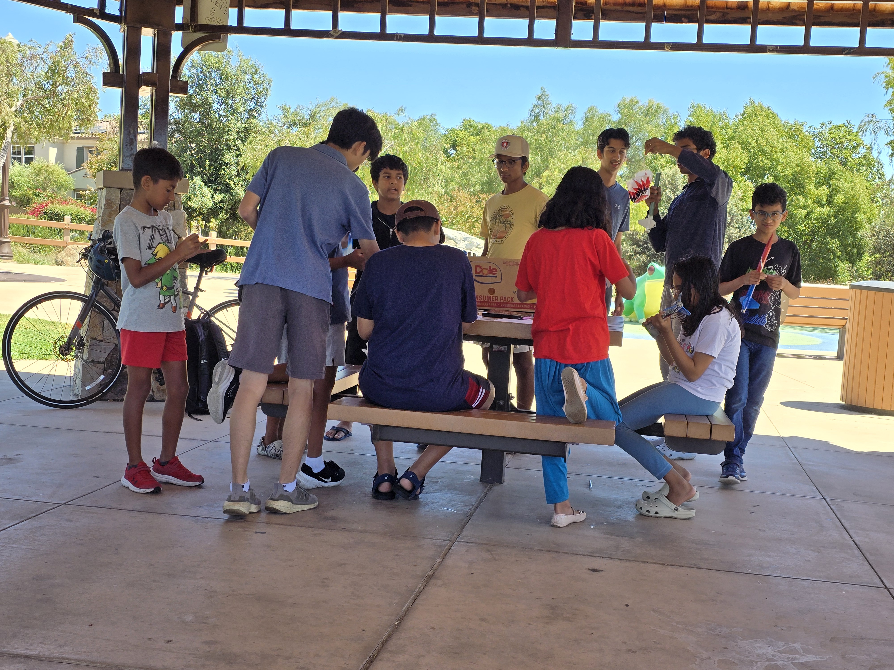

Newsroom
Team updates.
We are the 2026-2027 rocketry finalist, one of two San Diego teams to qualify for nationals.
This Month
2026-2027 finalist announcement
We are one of two San Diego teams to qualify for nationals, and this page will track the finalist season from here.
Finalist RunPrograms and Work Sessions
Interactive team gallery.
Browse the archive, tap through the featured set, and keep scrolling for more frames to appear.

Program Workshop
Design reviews and subsystem planning with the team.Archive Wall
Scroll for the rest of the story.
More images load as you move down the page, so the gallery feels like a living log instead of a static block.